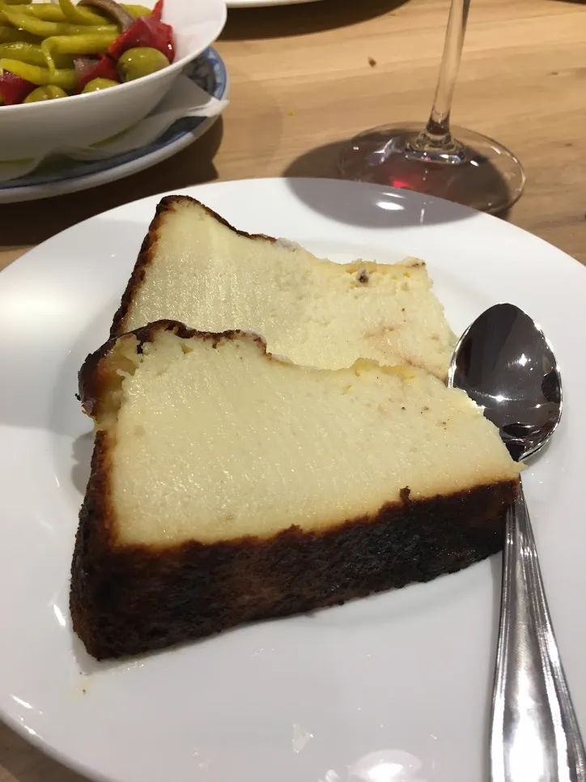
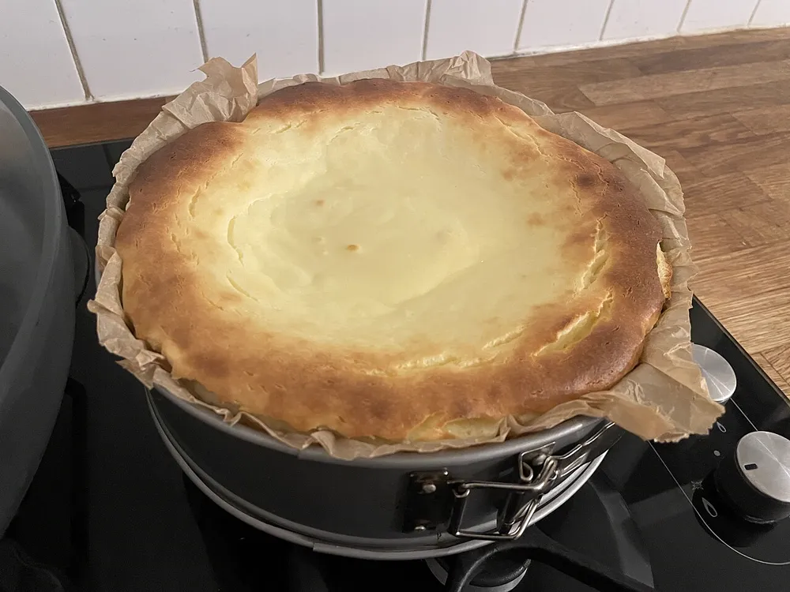

La tarta de queso cremosa es de esas recetas que dan sorpresas en casa. Sigues los pasos al pie de la letra y sale una tarta firme, algo granulosa y con una grieta en medio; la vuelves a hacer y, sin saber muy bien por qué, sale perfecta. La buena noticia es que casi todo depende de dos cosas que se pueden controlar: cuánto calor recibe la tarta y en qué momento la sacas del horno.
La tarta que cambió el gusto de medio mundo
Si hoy tanta gente busca la tarta de queso «cremosa por dentro», buena parte de la culpa es de un bar de pintxos de San Sebastián. La Viña abrió en 1959 en la calle 31 de Agosto, en la Parte Vieja, y en los años noventa Santiago Rivera, hijo de los fundadores, dio con la receta que la hizo famosa después de muchas pruebas. Su idea fue quitar todo lo que no fuera queso: sin base de galleta ni de masa, solo una crema que se hornea en un molde forrado con papel.
La receta tiene cinco ingredientes y ningún aroma añadido: queso crema, huevos, azúcar, nata y un poco de harina. La versión que publica la oficina de turismo de San Sebastián, para diez o doce personas, lleva un kilo de queso crema, siete huevos, 400 gramos de azúcar, cucharada y media de harina y medio litro de nata. Fuera de Euskadi se la conoce como San Sebastian cheesecake, pero en La Viña se llama, sin más, tarta de queso.

Dos maneras de hornearla
Aquí está la primera clave, y conviene entenderla bien porque parece una contradicción. La tarta de estilo vasco se hornea con el horno muy fuerte y poco rato: la superficie se tuesta y casi se quema, mientras el centro todavía no ha llegado a cuajar del todo. Las fuentes no coinciden en la temperatura exacta de La Viña; la oficina de turismo habla de 210 grados y otra crónica del propio bar de 180, las dos con unos 40 minutos. Lo que sí coinciden es en el resultado: dorada por fuera y cremosa por dentro.
La tarta de queso clásica, la que lleva base de galleta, va justo al revés: horno suave, alrededor de 160 grados, y a menudo al baño maría para que el calor llegue poco a poco. Son dos caminos distintos para lo mismo. Lo que estropea las dos es lo mismo también: dejarlas en el horno más de la cuenta.
El error que más se repite: hornearla de más
En King Arthur Baking, una web estadounidense de repostería, lo resumen sin rodeos: hornearla de más es la principal causa de las grietas. Cuando el huevo se calienta demasiado, sus proteínas forman una red rígida que no se estira; la tarta se encoge al enfriarse y se raja. Además, esa misma tarta queda más firme y algo granulosa en los bordes, que es justo lo contrario de lo que se busca.
El problema es que, cuando parece hecha en el horno, ya está pasada. El centro sigue cocinándose fuera del horno con el calor que guarda, así que hay que sacarla cuando todavía no lo parece. Para una tarta muy cremosa, ellos recomiendan que el centro esté entre 65 y 68 grados y el borde entre 74 y 77, si tienes termómetro de cocina. Por encima de unos 85 grados en cualquier punto, la grieta está casi asegurada.
Cómo saber cuándo sacarla sin termómetro
Si no tienes termómetro, la prueba es moverla. Mueve el molde con cuidado: los bordes, unos dos o tres centímetros hacia dentro, tienen que estar firmes, y el centro, un círculo de cinco a ocho centímetros, tiene que temblar como una gelatina, no moverse como una ola. Si quieres el centro todavía más fluido, deja que tiemble un círculo algo mayor. Es normal que al sacarla parezca a medio hacer: termina de cuajar mientras se enfría y en la nevera.

Lo que se hace antes y después del horno
Antes de hornear, dos detalles ayudan. Los ingredientes, sobre todo el queso y los huevos, mejor a temperatura ambiente, para que se mezclen sin grumos sin tener que batir mucho. Y la mezcla se hace despacio, solo hasta que quede lisa: si se bate a velocidad alta se mete aire, y ese aire se convierte en burbujas y grietas en el horno. En La Viña lo dicen a su manera: no batir los huevos antes y usar la harina para ligarlo todo.
Después, la paciencia. Un cambio brusco de temperatura también la agrieta, así que en las tartas clásicas se recomienda apagar el horno y dejarla dentro con la puerta entreabierta hasta que esté a temperatura ambiente, y solo entonces meterla en la nevera. La de estilo vasco necesita además unas cuantas horas de reposo antes de cortarla: la receta de La Viña habla de al menos cuatro.
Dónde comer tarta de queso en Lleida
Si te apetece sin encender el horno, en Vibra, en Cappont, la tarta de queso es uno de los postres de la carta. Se pide con un topping a elegir, Lotus, pistacho o Kinder Bueno, y está a 6,50 €. La encontrarás en la carta, después de las burgers.